Platform Redesign: Navigation, Load Cards & Control Tower
An extensible navigation and load-card system built to support multimodal tracking, control-tower views, and cross-team collaboration.
Design Leadership · Interaction Design · Systems Thinking · 5 minute read
Scope & requirements
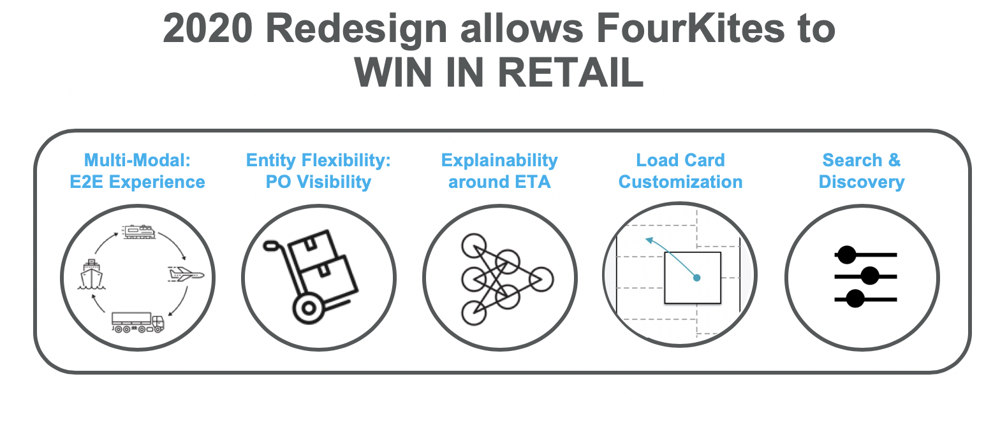
Navigation
The brief called for a design recommendation around an extensible pattern that supports a multimodal tracking experience (Truck Load, Less than Truck Load, Ocean, Rail, Parcel, and Air), multiple languages, white-labeling, and parent-child nesting of page links. The design needed to work across every page of the product, maximize screen real estate where possible, and support viewing the Loads-List page as either a load-card view or a map view.
- Consistent navigation experience across the site
- Map view vs. loads card view
- Complete design recommendation for the new navigation experience
Current navigation
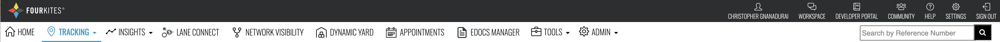
Proposed design
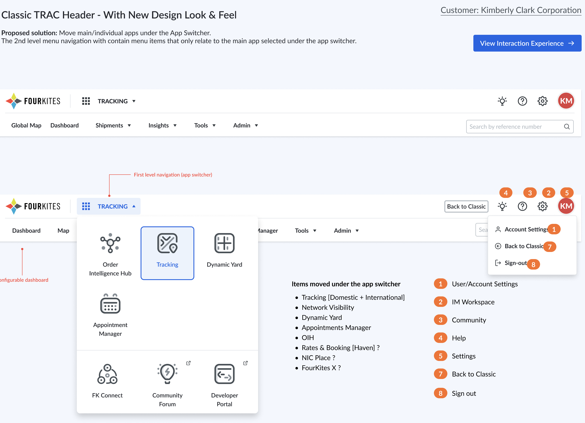
Load card redesign
Every load card was treated equally regardless of what stage a load was in. In reality a load exists in three phases: pre-pickup, in-transit, and at-stop. Customers take different actions and need different data communicated to them depending on the phase; if a load hasn't been picked up yet, for example, any ETA predictions are unreliable and shouldn't be shown.
Cards also needed to flex across modes. Each mode carries its own set of data attributes that matter for understanding status and next steps, and not every customer needs the same attributes to take action. On top of that, multiple data sources feed the card, some processed, some raw, with attributes like load status and tracking status inferred from that data. Customers weren't told which data points were inferred versus provided by another stakeholder, including their own input, and had no placeholder to input their own data through the UI. Predictions also needed better explainability: how probability distributions factor in, how a confidence score is derived, and whether actions can tie directly to outcomes, consistency, or savings, since most customers don't have a machine-learning background.
Each shipment status calls for a unique, business-specific customer action, and each action spans multiple stakeholders who need to coordinate. The product gave users no way to act on, define, or execute workflows, nor to record or share updates with others.
- Customizable load cards
- Differentiate sources of data
- Actionable workflows and collaboration
Current design
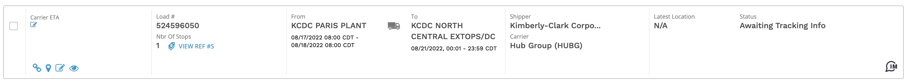
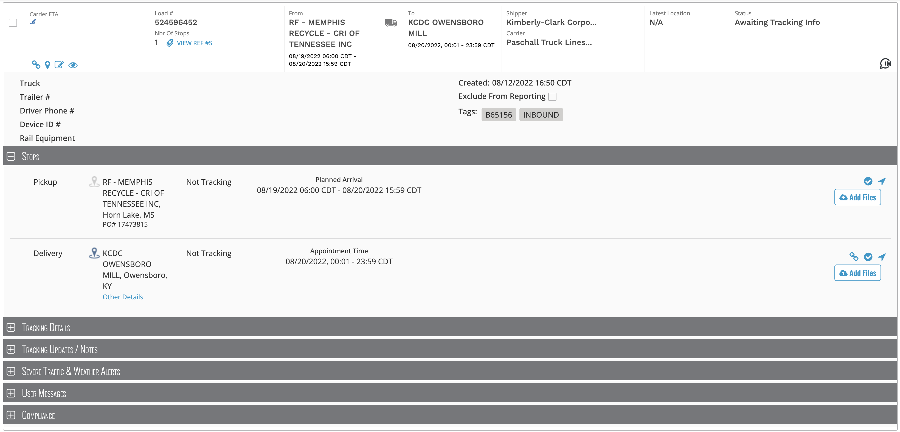
Proposed design
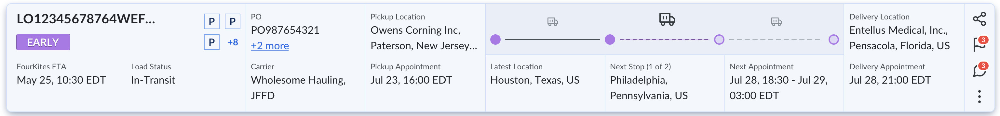
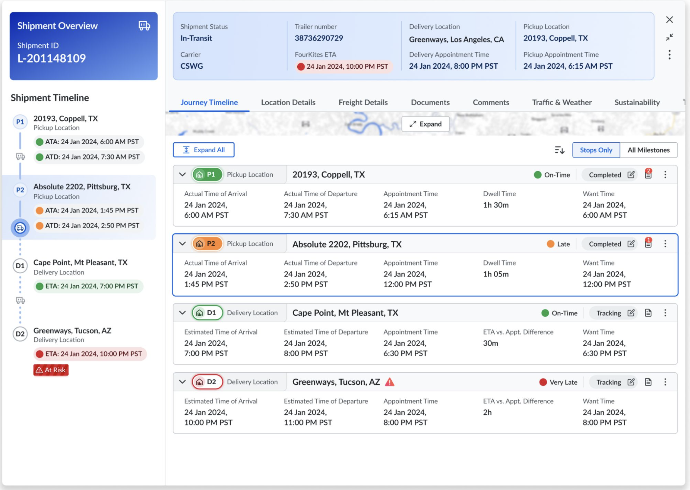
Search & discovery
The existing filter panel felt noisy and intimidating while consuming a third of the screen's real estate. Low-usage filters needed to move out of focus, while heavily used team filters needed a more intuitive setup and reuse flow. For most retail customers, the concept of a "load" is foreign: their internal processes track freight by PO number, SKU, or other values, but the platform only allowed tracking by load number. The new experience needed to let customers configure which business context they track through, loads, POs, SKUs, and more, and to make better use of tags, which customers already lean on heavily to capture org hierarchy, team structure, and product-line context.
There was also no concept of a workspace in the product. The redesign introduced a shareable team workspace built from filters and tags, a medium for collaboration, prioritization, and notifications that could also surface metrics from Insights. The search box was heavily used, including comma-separated load lists as a workaround for filtering limits (the platform capped results at 500), which signaled customers were using search to route around gaps in filtering, including the total absence of search and filtering within the map view.
- Filter redesign
- Saved filters / team filters
- Discovery by business context (load, PO, SKU, etc.)
- Team workspace
- Search box
- Search and filtering within the map view
Current design
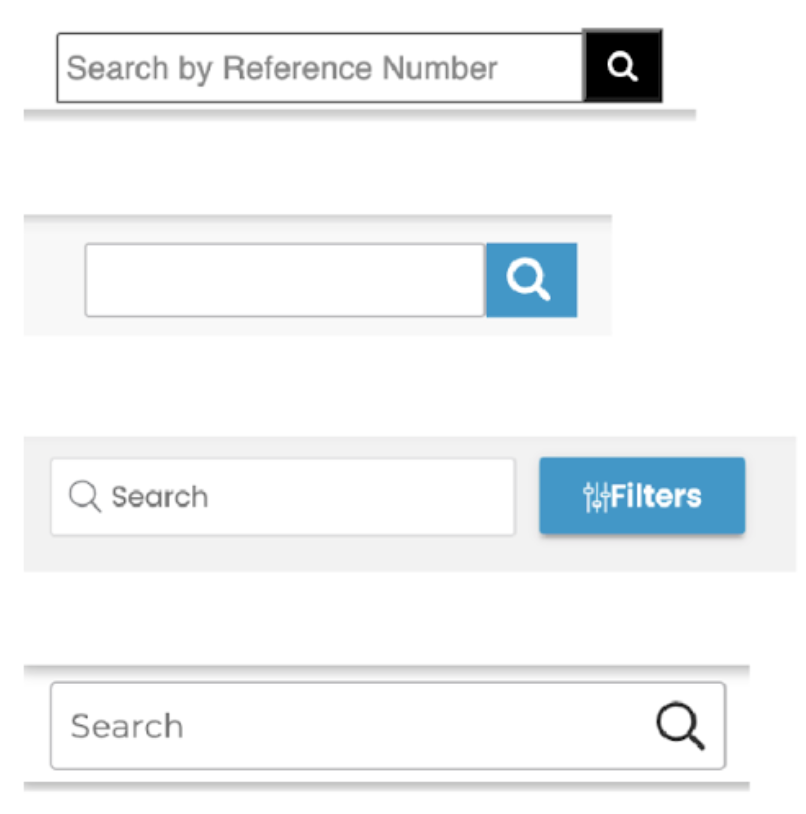
Proposed design
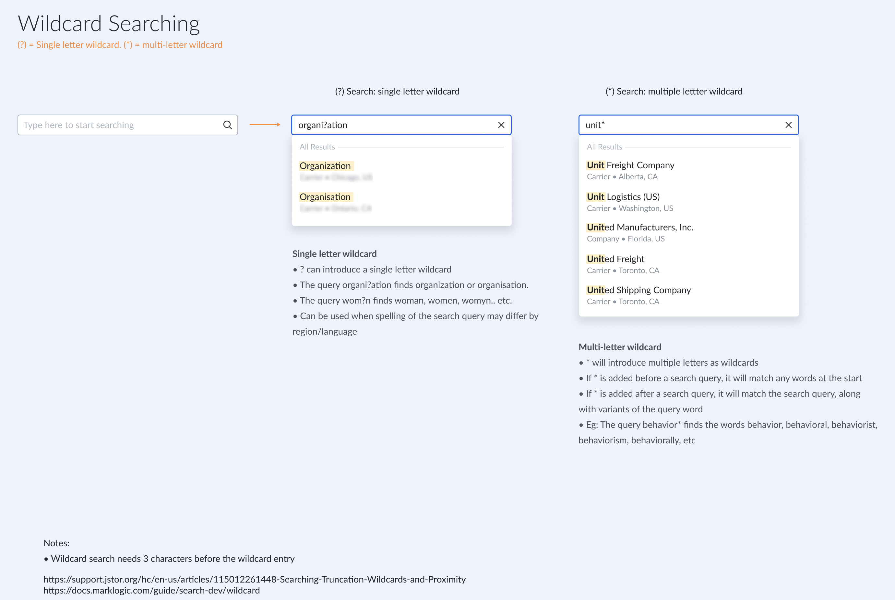
Search experience (Google Drive)
Control tower experience
The existing executive dashboard gave a snapshot of statistics across all of a customer's tracked loads, grouped into categories like "At Risk" and "On-Time," with a shortcut into the loads-list tracking experience filtered accordingly. But it only tracked by load, never by PO.
- Design the end-to-end control tower to include all modes
- Rebuild the existing executive dashboard, including PO-level views
Current design
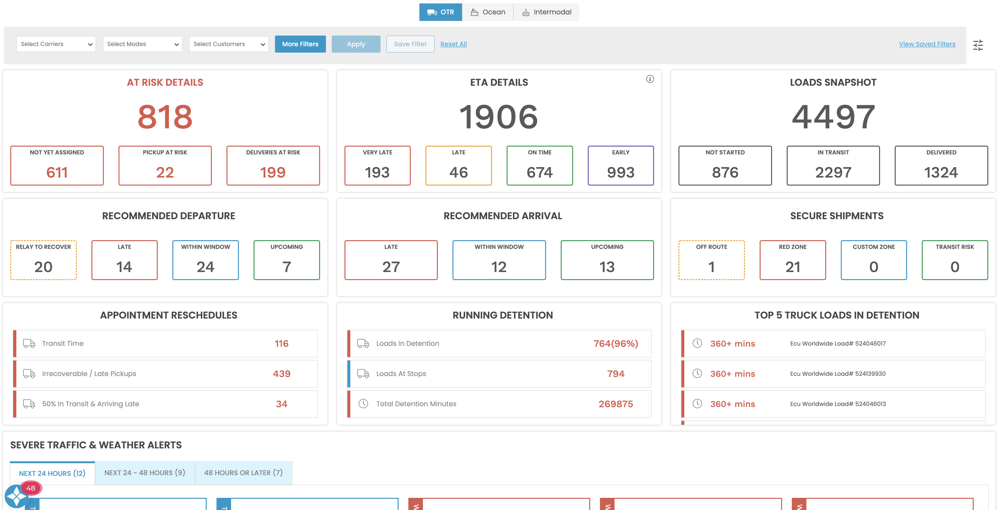
Proposed design
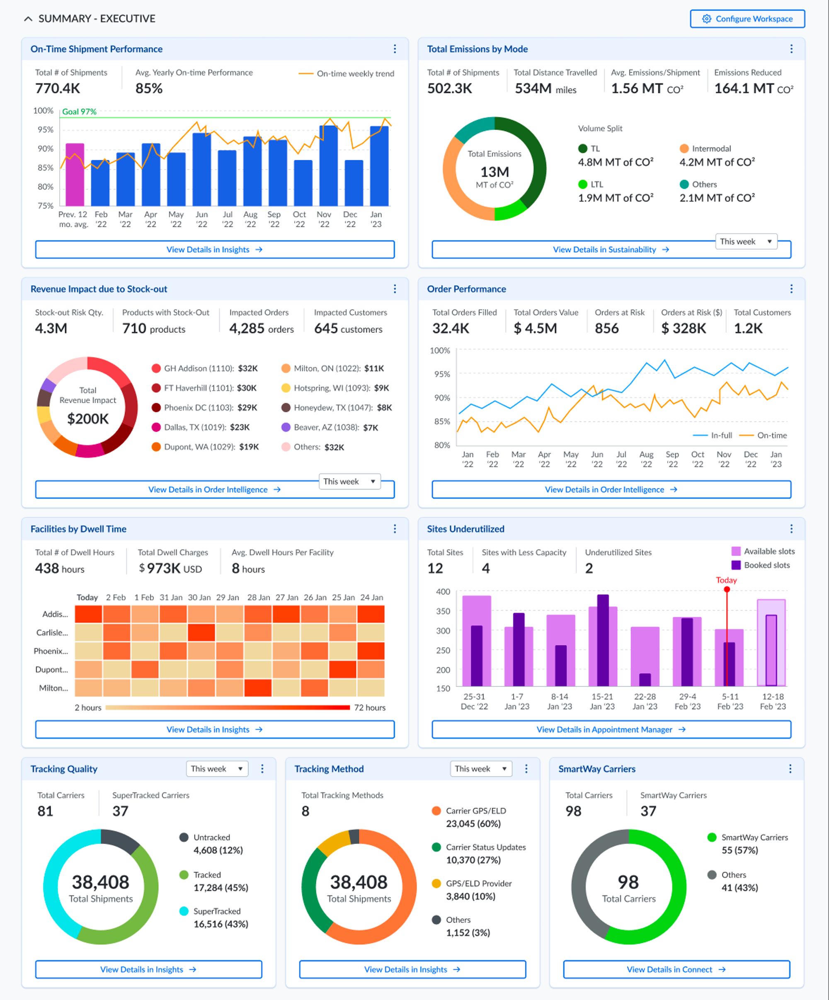
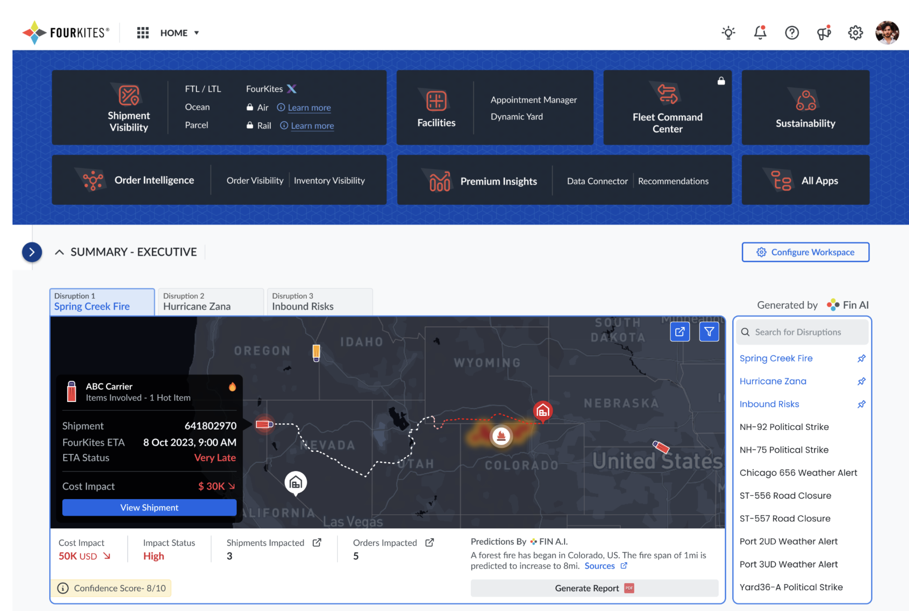
Collaboration
Different entities, carriers, shippers, and end customers, needed a way to collaborate with each other directly inside the platform. The goal was a single collaboration interface usable across every entity type.
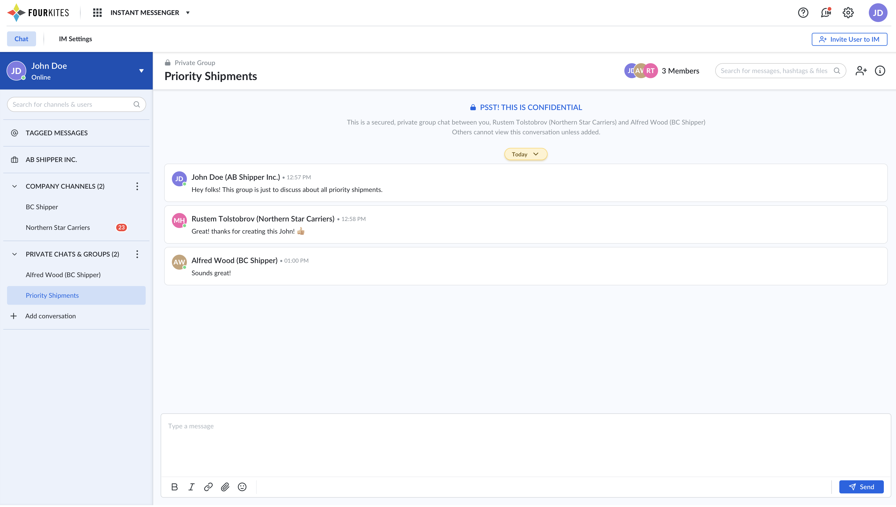
Instant messenger design (Google Drive)
Enhanced map view
The product's traffic and weather visualizations were basic and needed to be modernized, drawing inspiration from the newer generation of consumer mapping apps.
- Weather and traffic visualization
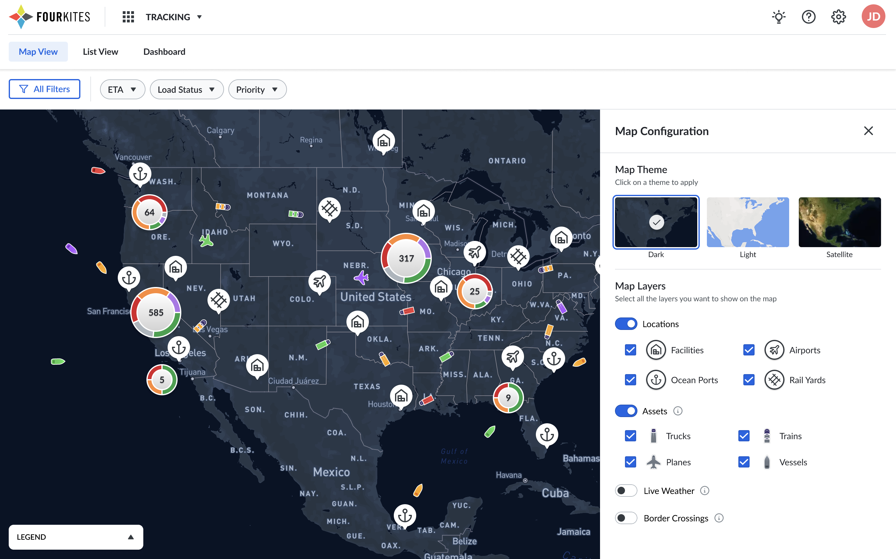
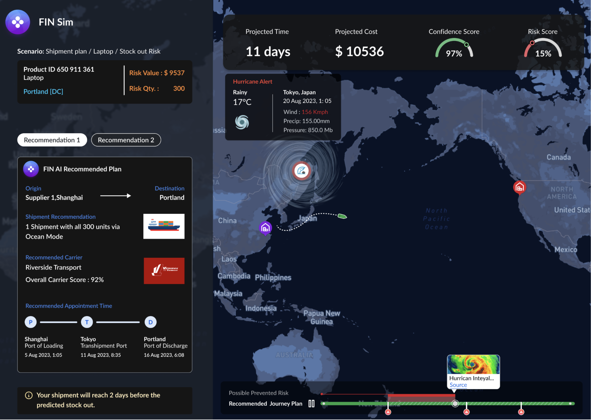
Global map view (Google Drive)
International
- Identify exception shipments quickly and take action on rolled bookings and missed port cutoffs
- Identify late shipments on the water, over the rail, or over the road, and communicate delays to stakeholders
- Ensure shipments have cleared customs and are released by the carrier
- Identify shipments arriving into the import country soon, so drayage can be arranged or changed
- See multiple list views: booking, container, bill of lading, inventory/PO/SKU, and vessel
- Follow inventory across modes end to end, for example truck to rail to ocean to rail to truck, with mode changes clearly visible
- See a shipment across multiple carriers
- Search by container, vessel, booking number, PO number, or SKU
- Combine location data with key event data, like a real-time vessel ping plus a loaded-on-vessel event
Why it mattered
This wasn't a single feature. It was the connective tissue underneath FourKites' entire tracking experience: navigation, cards, filters, control tower, collaboration, and map all needed to work as one coherent system across every mode the platform supported, not as separately designed experiences bolted together.